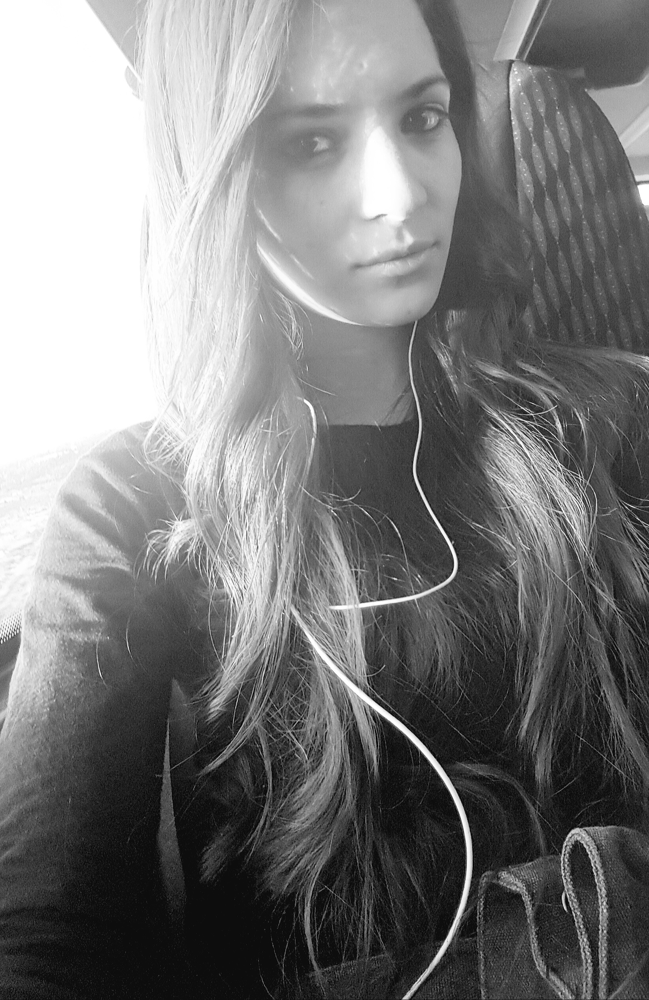

Quality is not an act, it's a habit.
dassizi16@gmail.com 058-4670097
Dassi Zeltzer
Quality Assurance Engineer
Experienced and self-motivated QA Engineer with a 'can do' attitude.
I consider myself a fast learner who’s always up for a challenge.
Results-driven individual who focuses on the job and needs of the company.
Team player who likes working with other people.
I have a very high work ethic and loves to delve and explore.
Especially I have a motivation to learn new things and develop my skills.
It's my firm belief that QA is much more than just testing or bugs.
QA is about taking something good and making it even better!
So if you're looking for someone like me don't hesitate to contact me.


Hello, I'm thrilled to Invite you to get to know a bit more about me and what I'm about.
Hadasa Zeltzer, software quality assurance and automation engineer.
Apart from being a QA tester, on my free time I like doing sport activities and also I enjoy spending time listening to music.
I love playing video games, and challenging myself
My Skills & Experience
I have experience with manual testing on web and mobile applications, along with writing various test documents.
Good knowledge of the following software:
Education
Graduate of the QA course in the External Studies Unit, Israel Technological Institute "Technion"
Experience in ERP project:
✔ Planning the testing process according to testing methodologies
✔ Extracting requirements from a fuctional design document
✔ Designing test cases using TestRail software
Experience in the WEB project:
✔ Finding bugs using Exploratory Testing method Combined with a web Dedicated test Checklist
✔ Debugging using JIRA software
✔ Summary of tests committed and bugs found in the system throughout the process
✔ Test results, and statistics on the system.
✔ Recommendations regarding the system and the project itself
My Projects
The projects were done as part of QA studies and include:
test documents - STP, STD, STR, visual presentations, executive reports and more.
© 2022 Dassi Zeltzer - All Rights Reserved